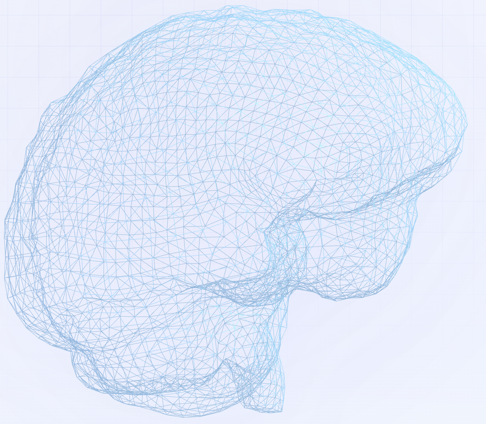
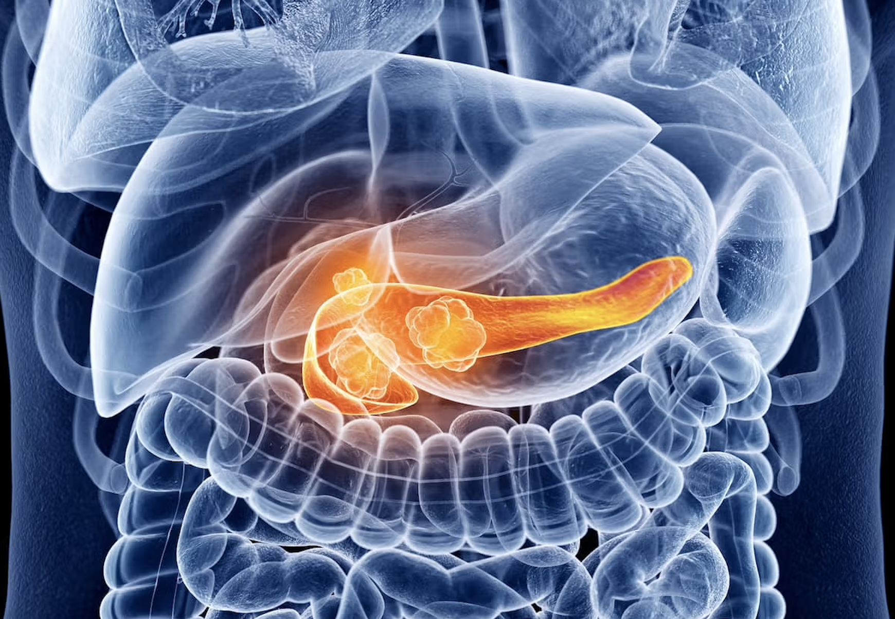
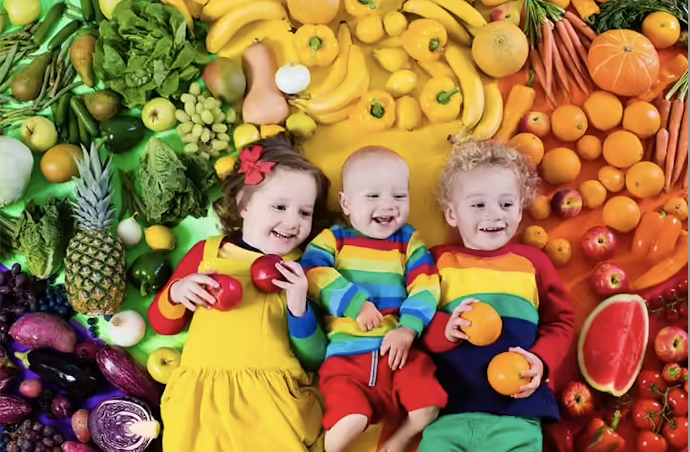
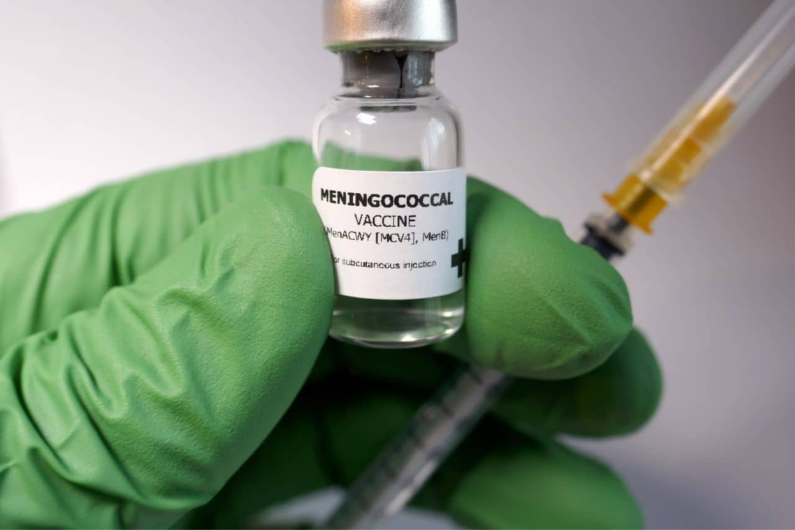

The University of Melbourne
Cathy Liu
Master of Biotechnology candidate combining wet-lab training with computational biology and AI-driven discovery. Recently developed an end-to-end pipeline for epilepsy neurostimulation that pairs LLM-based literature mining with brain digital-twin simulation (The Virtual Brain) and minimax optimisation, tuning stimulation settings to protect the worst-responding patient rather than the average. Earlier, co-developed a PDAC target discovery workflow integrating single-cell RNA-seq, regulatory network inference, and DepMap benchmarking. Proficient in Python and R, with hands-on experience in GMP vaccine R&D and a track record of explaining technical work clearly to both scientific and non-scientific audiences. My interests sit at the intersection of biology and AI-driven discovery — from disease modelling to therapeutic target identification.

Projects

LLM-Guided Minimax Optimisation for Epilepsy Neurostimulation
End-to-end pipeline combining Claude API literature mining, The Virtual Brain (TVB) digital-twin simulation, and minimax optimisation to identify robust neurostimulation settings that protect the worst-responding patient.

From Differential Expression to Virtual Knockouts — PDAC Target Discovery
Automated target-discovery pipeline for pancreatic ductal adenocarcinoma integrating scRNA-seq differential expression, LLM-assisted regulatory network construction, Boolean knockout simulation, AlphaFold 3 structural prediction, and DepMap benchmarking to prioritise therapeutic candidates.

Developing Strategies to Treat Childhood Malnutrition
Evaluated biotechnology strategies integrating mechanistic rationale, scientific evidence, and development considerations into structured briefing summaries.

ACYW135 Quadrivalent Meningococcal Polysaccharide Vaccine
End-to-end vaccine R&D spanning molecular characterisation, QC method development, formulation optimisation, and preclinical immunogenicity evaluation.
Education
Guangdong Medical University
Experience
Research Analyst · Murdoch Children's Research Institute (MCRI)
- Led Biotech Interventions workstream in an industry-partnered project on childhood malnutrition.
- Synthesised biological readouts (growth indices, inflammatory markers, microbial signals) into decision-oriented technical summaries.
- Delivered technical briefs to mixed scientific and non-scientific stakeholders.
Research Assistant · Beijing Institute of Biological Products Co., Ltd.
- Contributed to early-stage R&D of ACYW135 quadrivalent meningococcal polysaccharide vaccine.
- Developed and validated rocket electrophoresis as a QC method for polysaccharide content quantification.
- Characterised polysaccharide molecular weight via HPLC/SEC; maintained GMP/SOP-compliant documentation.
Pharmacy Assistant · Guangdong Women and Children's Hospital
- Rotated across inpatient pharmacy, IV room, outpatient pharmacy, and drug warehouse.
- Conducted prescription review, medication verification, and patient counselling.
- Therapeutic Drug Monitoring Lab: processed blood samples for pharmacokinetic monitoring.
Research Assistant · Shanxi Zhendong Pharmaceutical Co., Ltd.
- Managed stakeholder relationships with health providers and hospital pharmacies.
- Coordinated supply continuity and identified implementation bottlenecks.